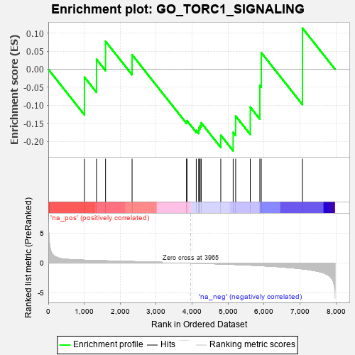
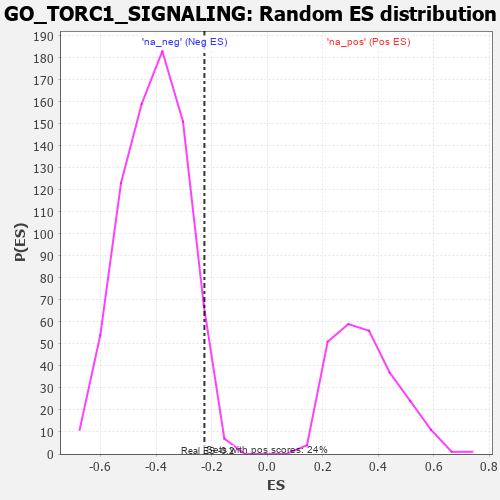

| | | Dataset | 7d |
| Phenotype | NoPhenotypeAvailable |
| Upregulated in class | na_neg |
| GeneSet | GO_TORC1_SIGNALING |
| Enrichment Score (ES) | -0.22590262 |
| Normalized Enrichment Score (NES) | -0.55502844 |
| Nominal p-value | 0.96164024 |
| FDR q-value | 1.0 |
| FWER p-Value | 1.0 |
Table: GSEA Results Summary

Fig 1: Enrichment plot: GO_TORC1_SIGNALING
Profile of the Running ES Score & Positions of GeneSet Members on the Rank Ordered List
| PROBE | GENE SYMBOL | GENE_TITLE | RANK IN GENE LIST | RANK METRIC SCORE | RUNNING ES | CORE ENRICHMENT | | 1 | TELO2 | | | 1006 | 0.482 | -0.0220 | No |
| 2 | KPTN | | | 1341 | 0.422 | 0.0273 | No |
| 3 | NPRL3 | | | 1592 | 0.375 | 0.0773 | No |
| 4 | SEC13 | | | 2330 | 0.256 | 0.0401 | No |
| 5 | SMG1 | | | 3843 | 0.021 | -0.1454 | No |
| 6 | DGKQ | | | 3856 | 0.020 | -0.1426 | No |
| 7 | MTOR | | | 4114 | -0.025 | -0.1696 | No |
| 8 | RRAGD | | | 4183 | -0.039 | -0.1697 | No |
| 9 | SESN1 | | | 4192 | -0.041 | -0.1619 | No |
| 10 | RRAGA | | | 4223 | -0.046 | -0.1558 | No |
| 11 | RPTOR | | | 4252 | -0.050 | -0.1484 | No |
| 12 | ITFG2 | | | 4796 | -0.156 | -0.1828 | Yes |
| 13 | FLCN | | | 5140 | -0.235 | -0.1750 | Yes |
| 14 | ATM | | | 5210 | -0.249 | -0.1296 | Yes |
| 15 | LARP1 | | | 5616 | -0.349 | -0.1049 | Yes |
| 16 | SZT2 | | | 5882 | -0.429 | -0.0451 | Yes |
| 17 | STK11 | | | 5922 | -0.443 | 0.0459 | Yes |
| 18 | MFSD8 | | | 7067 | -0.977 | 0.1137 | Yes |
Table: GSEA details [plain text format]

Fig 2: GO_TORC1_SIGNALING: Random ES distribution
Gene set null distribution of ES for GO_TORC1_SIGNALING